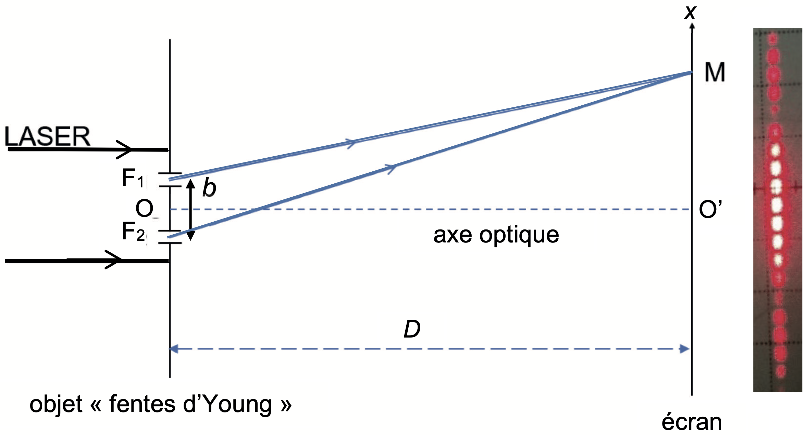
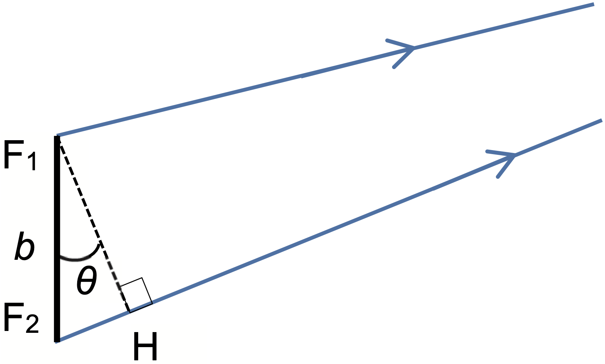
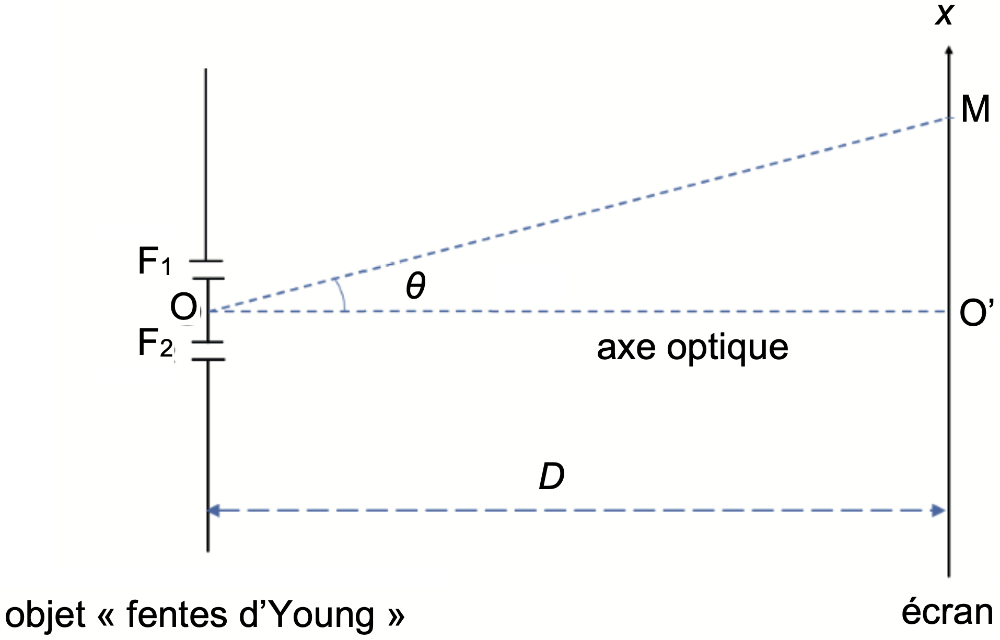
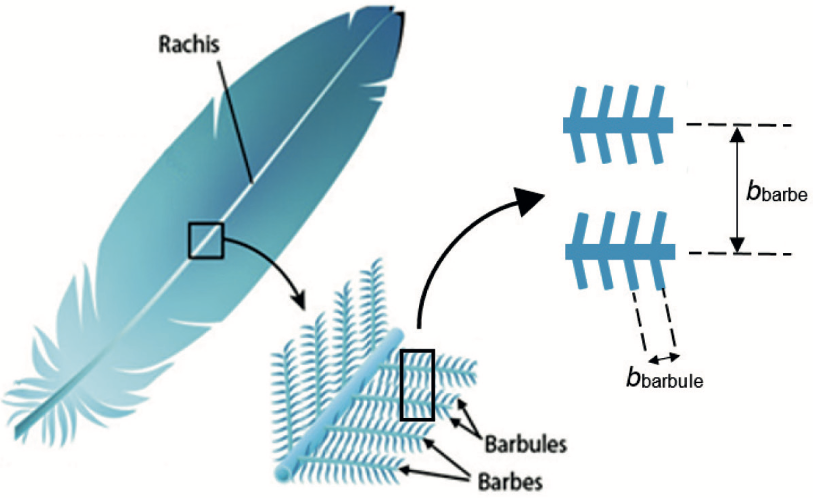
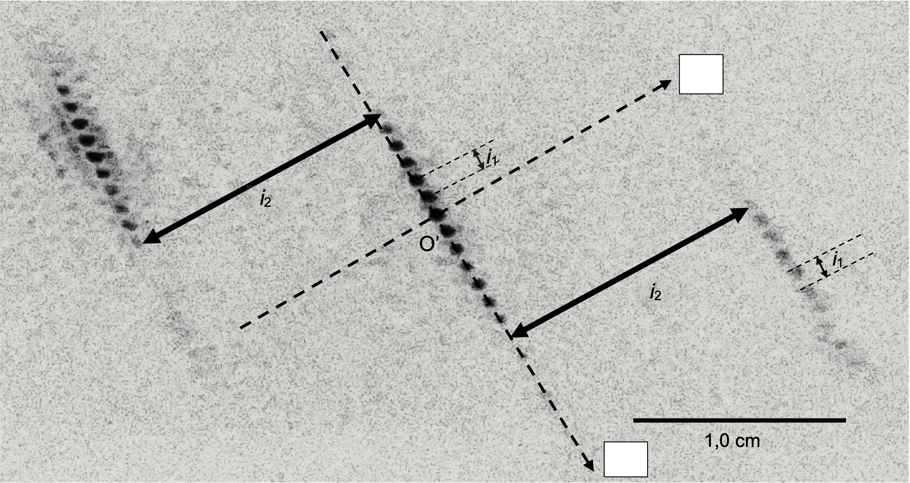
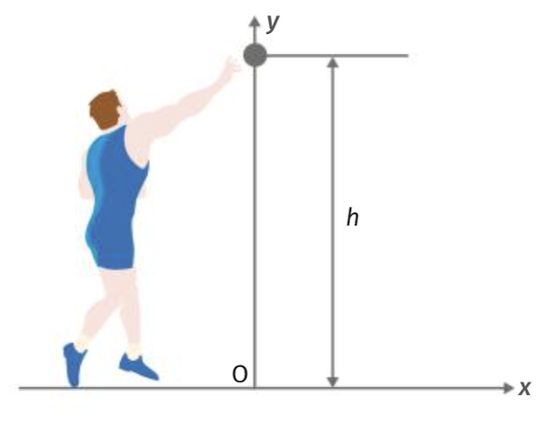
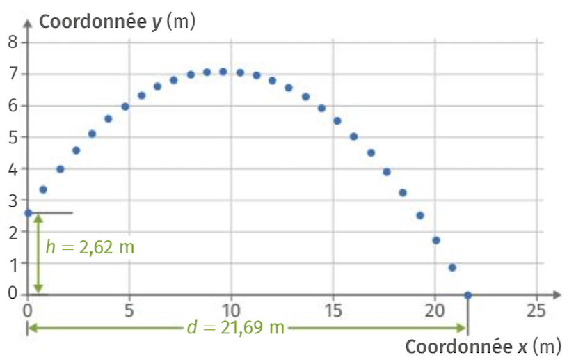
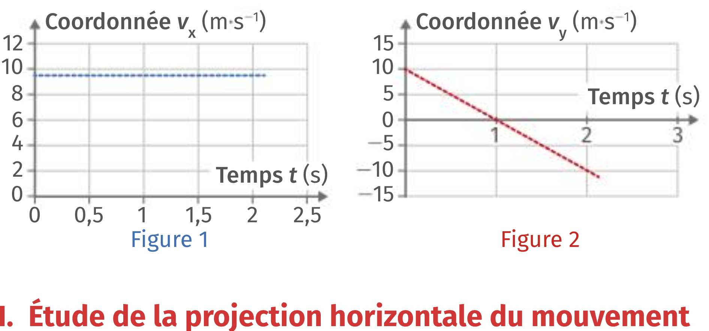

Pour identifier l’espèce d’un oiseau, la plume est une des parties du
corps de l’animal qu’il est possible d’étudier. Les plumes d’oiseaux
sont des objets complexes qui possèdent des structures géométriques
périodiques à des échelles différentes, qu’il est possible d’étudier par
des méthodes interférométriques.
L’expérience des fentes d’Young permet d’obtenir, sur un écran, une
figure d’interférences constituée d’une succession de franges brillantes
et sombres qui se répartissent sur un axe de direction parallèle à la
droite joignant les deux fentes.
Le document 1 donne une schématisation d’une
expérience des fentes d’Young, de centres \(F_1\) et \(F_2\), ainsi qu’une photographie de la
figure d’interférence obtenue.

Un faisceau lumineux issu d’un laser de longueur d’onde \(\lambda\), éclaire un objet plan totalement
opaque en dehors de deux fentes, séparées d’une distance \(b\). Cet objet est appelé "fentes
d’Young".
Le faisceau est constitué d’un ensemble de rayons parallèles, et se
propage parallèlement à l’axe optique \((OO')\), le point \(O\) étant à égale distance des points \(F_1\) et \(F_2\) et le point \(O'\) étant situé sur l’écran.
Les ondes issues des fentes interfèrent sur l’écran. en un point \(M\) de celui-ci, on admet que la différence
de chemin optique entre les deux ondes s’écrit \(\delta = F_2M - F_1M\).
L’écran est situé à une distance \(D\)
des fentes très grande devant la distance \(b\) (\(D >>
b\)).
Préciser la condition que doit vérifier la différence de chemin \(\delta\) pour que les ondes issues des fentes interfèrent de manière constructive au point \(M\).
Indiquer en justifiant dans ce cas si la frange au point \(O'\) est brillante ou sombre.
Sur le document 2, le point \(H\) représente le projeté de \(F_1\) sur le segment \([F_2M]\). On admet que la différence de chemin optique \(\delta\) est égale à la longueur du segment \([F_2H]\).

On montre, avec une très bonne approximation, que l’angle \(\theta\) est égal à l’angle \(\widehat{O'OM}\) dans le triangle rectangle \(O'OM\) représenté sur le document 3. l’abscisse du point \(M\) sur l’axe \(O'x\) est notée \(x\).

Après avoir exprimé l’angle \(\theta\) en fonction de \(D\) et \(x\), montrer que la différence de chemin optique \(\delta\) a pour expression : \[\delta = \dfrac{b \cdot x}{D}\]
En déduire l’expression des abscisses \(x_k\) des franges brillantes, en fonction de \(\lambda\), \(D\), \(b\) et d’un entier relatif \(k\).
Montrer que l’interfrange \(i\) est donnée par l’expression littérale suivante : \[i = \dfrac{\lambda \cdot D}{b}\]

Le document 4 montre qu’une plume d’oie est composée d’un ensemble de barbes (tiges) fixées sur le rachis (axe principal de la plume d’oie). Les barbes supportent des éléments plus petits et fins, invisibles à l’œil nu, appelés barbules. Les barbes sont régulièrement espacées d’une distance notée \(b_{barbe}\), les barbules sont régulièrement espacées d’une distance notée \(b_{barbule}\) (voir document 4) et sont dans une direction pratiquement perpendiculaire à celle des barbes. Les barbules sont plus resserrées que les barbes, on a donc \(b_{barbule} < b_{barbe}\).
On réalise la même expérience que celle décrite dans le document
1 en remplaçant l’objet "fentes d’Young"
par une plume d’oie, éclairée par un laser dont la longueur d’onde est
\(\lambda = \SI{650}{nm}\). L’écran est
placé à une distance \(D =
\SI{74}{cm}\) de la plume. On obtient alors une figure
d’interférences dont la protographie (en négatif) est donnée
document 5.
L’écran est rapporté à un repère d’origine \(O'\) et d’axes \(O'x\) et \(O'y\) orthogonaux. Dans un modèle très
simplifié, il est possible de montrer que les interférences sont
constructives uniquement en des points de coordonnées (\(x_k\), \(y_l\)), vérifiant les relations : \[x_k = k \cdot \dfrac{\lambda \cdot D}{b_{barbe}}
\text{ et } y_l = l \cdot \dfrac{\lambda \cdot D}{b_{barbule}}\]
où \(k\) et \(l\) sont des entiers relatifs.
Le modèle prévoit que seulement certains de ces points sont lumineux du
fait des détails de la géométrie des plumes auxquels on ne s’intéresse
pas ici.
Montrer que le modèle simplifié permet d’expliquer certaines des caractéristiques de la figure d’interférences observées sur le document 5. Dans les cases vides de ce document, identifier, en justifiant, l’axe \(O'x\) puis l’axe \(O'y\).
En exploitant la figure 5, évaluer les valeurs des interfranges \(i_1\) et \(i_2\) puis en déduire les valeurs des espacements \(b_{barbule}\) et \(b_{barbe}\).

Il s’agit d’une photographie en négatif : les points sombres sur la photographie correspondent à des points brillants dans la réalité.
Lors des Championnats du monde d’athlétisme qui ont eu lieu à Paris
en août 2003, le vainqueur de l’épreuve du lancer du poids, Andrei
Mikhnevich, a réussi un jet à une distance \(d
= \SI{21,69}{m}\).
L’entraîneur de l’un de ses concurrents souhaite étudier ce lancer. Pour
cela, il dispose pour le centre d’inertie du boulet, en plus de la
valeur 21.69 m du record, de la vitesse initiale \(v_0\) mesurée à l’aide d’un cinémomètre et
de l’altitude \(h\).

L’entraîneur a étudié le mouvement du boulet et a obtenu trois graphes :
le graph de la trajectoire \(y=f(x)\) du boulet

les graphes de \(v_x(t)\) et de
\(v_y(t)\) en fonction du temps \(t\) où \(v_x(t)\) et \(v_y(t)\) sont les coordonnées horizontale
et verticale du vecteur vitesse \(\vec{v}(t)\).

Données :
Vitesse initiale du boulet : \(v_0 = \SI{13,8}{\meter\per\second}\)
Hauteur initiale du lancer : \(h = \SI{2,62}{\meter}\)
Intensité de pesanteur : \(g = \SI{9,81}{\newton\per\kilo\gram}\)
Déterminer la composante \(v_{0x}\) du vecteur du boulet à l’instant de date \(t_0 = \SI{0}{s}\).
Caractériser la nature du mouvement de la projection sur l’axe (\(Ox\)) en justifiant la réponse.
Déterminer la composante \(v_{Sx}\) du vecteur vitesse lorsque le boulet est au sommet \(S\) de sa trajectoire.
En utilisant la figure 2, déterminer la composante \(v_{0y}\) du vecteur vitesse à l’instant \(t_0 = \SI{0}{s}\).
A partir des résultats précédents, vérifier que la valeur de la vitesse initiale et celle de l’angle de tir soient compatibles avec les valeurs respectives \(v_0 = \SI{13,8}{\meter\per\second}\) et \(\alpha = \SI{43}{\degree}\).
Déterminer toutes les caractéristiques du vecteur vitesse du boulet au sommet de la trajectoire.
Reproduire, à main levée et sans souci d’échelle, le graphe \(y=f(x)\), puis représenter :
le vecteur vitesse du boulet à l’instant du lancer
le vecteur vitesse du boulet au sommet de la trajectoire
L’accélération du boulet admet comme coordonnées en fonction du temps : \[\vec{a}(t)\left\{ \begin{array}{c} a_x(t) = 0\\ a_y(t) = -g \end{array} \right\}_{(O,\vec{i},\vec{j})}\]
Dans le repère d’espace défini en introduction, montrer que les équations horaires de la vitesse s’expriment sous la forme : \[\vec{v}(t)\left\{ \begin{array}{c} v_x(t) = v_0 \cdot \cos(\alpha)\\ v_y(t) = -g \cdot t + v_0 \cdot \sin(\alpha) \end{array} \right\}_{(O,\vec{i},\vec{j})}\]
Dans le repère d’espace défini en introduction, montrer que les équations horaires du mouvement s’expriment sous la forme : \[x(t) = v_0 \cdot \cos(\alpha) \cdot t\] \[y(t) = -\frac{1}{2} g \cdot t^2 + v_0 \cdot \sin(\alpha) \cdot t +h\]
L’équation de la trajectoire \(y(t)\) s’obtient en isolant \(t\) dans l’équation horaire \(x(t)\), puis en remplaçant \(t\) par sa nouvelle forme dans l’équation horaire \(y(t)\).
Vérifier ainsi que l’équation de la trajectoire est de la forme : \[y(x) = -\dfrac{g \cdot x^2}{2v_0^2\cdot \cos(\alpha)^2} + \tan(\alpha) \cdot x + h\]
En déduire la position téhorique atteinte par le boulet lorsqu’il touche le sol avec les conditions initiales précédemment évoquées : \(v_0 = \SI{13,8}{\meter\per\second}\), \(h = \SI{2,62}{m}\) et \(\alpha = \SI{43}{\degree}\)